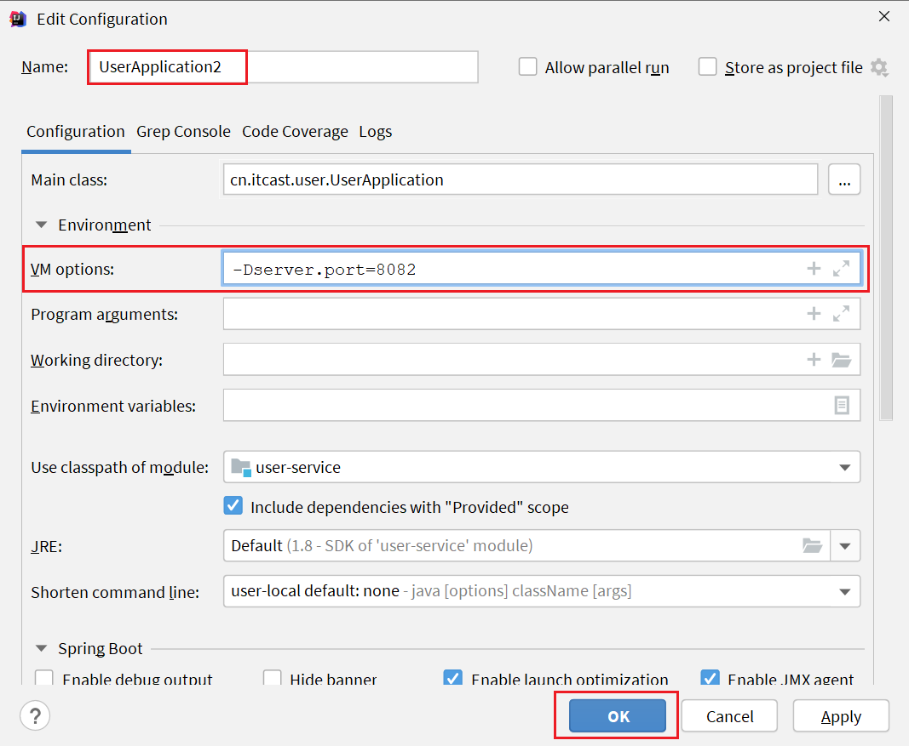

前期学完了Java基础和一些开发框架后，我们开始微服务学习，就了解两个常见的SpringCloud和MQ两个框架的基础知识。学完之后Java开发就会告一段落。就会开启Java安全，前端开发的篇章。这些都将是未来从事安全开发，还是安全研究必须要了解的东西。争取在八月份将前端开发写完，目前暂定写到Vue框架。
认识微服务
单体架构
单体架构：将业务的所有功能集中在一个项目中开发，打成一个包部署。

单体架构的优缺点如下：
优点：
- 架构简单
- 部署成本低
缺点：
- 耦合度高（维护困难、升级困难）
分布式架构
分布式架构：根据业务功能对系统做拆分，每个业务功能模块作为独立项目开发，称为一个服务。

分布式架构的优缺点：
优点：
- 降低服务耦合
- 有利于服务升级和拓展
缺点：
- 服务调用关系错综复杂
分布式架构虽然降低了服务耦合，但是服务拆分时也有很多问题需要思考：
- 服务拆分的粒度如何界定？
- 服务之间如何调用？
- 服务的调用关系如何管理？
人们需要制定一套行之有效的标准来约束分布式架构。
微服务
微服务的架构特征：
- 单一职责：微服务拆分粒度更小，每一个服务都对应唯一的业务能力，做到单一职责
- 自治：团队独立、技术独立、数据独立，独立部署和交付
- 面向服务：服务提供统一标准的接口，与语言和技术无关
- 隔离性强：服务调用做好隔离、容错、降级，避免出现级联问题

微服务的上述特性其实是在给分布式架构制定一个标准，进一步降低服务之间的耦合度，提供服务的独立性和灵活性。做到高内聚，低耦合。
因此，可以认为微服务是一种经过良好架构设计的分布式架构方案 。
但方案该怎么落地？选用什么样的技术栈？全球的互联网公司都在积极尝试自己的微服务落地方案。
其中在Java领域最引人注目的就是SpringCloud提供的方案了。
实现远程调用案例
我们使用一个微服务demo，结构如下

cloud-demo：父工程，管理依赖
- order-service：订单微服务，负责订单相关业务
- user-service：用户微服务，负责用户相关业务
要求：
- 订单微服务和用户微服务都必须有各自的数据库，相互独立
- 订单服务和用户服务都对外暴露Restful的接口
- 订单服务如果需要查询用户信息，只能调用用户服务的Restful接口，不能查询用户数据库
我们需要修改order-service中的根据id查询订单业务，要求在查询订单的同时，根据订单中包含的userId查询出用户信息，一起返回。
因此，我们需要在order-service中 向user-service发起一个http的请求，调用http://localhost:8081/user/{userId}这个接口。
大概的步骤是这样的：
- 注册一个RestTemplate的实例到Spring容器
- 修改order-service服务中的OrderService类中的queryOrderById方法，根据Order对象中的userId查询User
- 将查询的User填充到Order对象，一起返回
注册RestTemplate
@MapperScan("order.mapper")
@SpringBootApplication
public class OrderApplication {
public static void main(String[] args) {
SpringApplication.run(OrderApplication.class, args);
}
@Bean
public RestTemplate restTemplate() {
return new RestTemplate();
}
}实现远程调用
修改OrderService中的queryOrderById方法

提供者与消费者
在服务调用关系中，会有两个不同的角色：
服务提供者：一次业务中，被其它微服务调用的服务。（提供接口给其它微服务）
服务消费者：一次业务中，调用其它微服务的服务。（调用其它微服务提供的接口）

但是，服务提供者与服务消费者的角色并不是绝对的，而是相对于业务而言。
如果服务A调用了服务B，而服务B又调用了服务C，服务B的角色是什么？
- 对于A调用B的业务而言：A是服务消费者，B是服务提供者
- 对于B调用C的业务而言：B是服务消费者，C是服务提供者
因此，服务B既可以是服务提供者，也可以是服务消费者。
Eureka注册中心
假如我们的服务提供者user-service部署了多个实例，如图：

大家思考几个问题：
- order-service在发起远程调用的时候，该如何得知user-service实例的ip地址和端口？
- 有多个user-service实例地址，order-service调用时该如何选择？
- order-service如何得知某个user-service实例是否依然健康，是不是已经宕机？
Eureka的结构和作用
这些问题都需要利用SpringCloud中的注册中心来解决，其中最广为人知的注册中心就是Eureka，其结构如下：

回答之前的各个问题。
问题1：order-service如何得知user-service实例地址？
获取地址信息的流程如下：
- user-service服务实例启动后，将自己的信息注册到eureka-server（Eureka服务端）。这个叫服务注册
- eureka-server保存服务名称到服务实例地址列表的映射关系
- order-service根据服务名称，拉取实例地址列表。这个叫服务发现或服务拉取
问题2：order-service如何从多个user-service实例中选择具体的实例？
- order-service从实例列表中利用负载均衡算法选中一个实例地址
- 向该实例地址发起远程调用
问题3：order-service如何得知某个user-service实例是否依然健康，是不是已经宕机？
- user-service会每隔一段时间（默认30秒）向eureka-server发起请求，报 告自己状态，称为心跳
- 当超过一定时间没有发送心跳时，eureka-server会认为微服务实例故障，将该实例从服务列表中剔除
- order-service拉取服务时，就能将故障实例排除了
注意：一个微服务，既可以是服务提供者，又可以是服务消费者，因此eureka将服务注册、服务发现等功能统一封装到了eureka-client端
因此，接下来我们动手实践的步骤包括：

搭建eureka-server
首先注册中心服务端：eureka-server，这必须是一个独立的微服务
在cloud-demo下新建一个maven模块
引入SpringCloud为eureka提供的starter依赖：
<dependency>
<groupId>org.springframework.cloud</groupId>
<artifactId>spring-cloud-starter-netflix-eureka-server</artifactId>
</dependency>编写启动类
@SpringBootApplication
@EnableEurekaServer
public class EurekaApplication {
public static void main(String[] args) {
SpringApplication.run(EurekaApplication.class, args);
}
}编写配置文件
编写一个application.yml文件
server:
port: 10086
spring:
application:
name: eureka-server
eureka:
client:
service-url:
defaultZone: http://127.0.0.1:10086/eureka启动服务
可见启动成功
服务注册
我们将user-service注册到eureka-server中去。
引入依赖
在user-service的pom文件中，引入下面的eureka-client依赖：
<dependency>
<groupId>org.springframework.cloud</groupId>
<artifactId>spring-cloud-starter-netflix-eureka-client</artifactId>
</dependency>配置文件
在user-service中，修改application.yml文件，添加服务名称、eureka地址：
spring:
application:
name: userservice
eureka:
client:
service-url:
defaultZone: http://127.0.0.1:10086/eureka启动多个user-service实例
为了演示一个服务有多个实例的场景，我们添加一个SpringBoot的启动配置，再启动一个user-service。
首先，复制原来的user-service启动配置：
然后，在弹出的窗口中，填写信息：
现在，SpringBoot窗口会出现两个user-service启动配置：
不过，第一个是8081端口，第二个是8082端口。
启动两个user-service实例：

查看eureka-server管理页面：

服务发现
将order-service的逻辑修改：向eureka-server拉取user-service的信息，实现服务发现。
引入依赖
服务发现、服务注册统一都封装在eureka-client依赖，因此这一步与服务注册时一致。
在order-service的pom文件中，引入下面的eureka-client依赖：
<dependency>
<groupId>org.springframework.cloud</groupId>
<artifactId>spring-cloud-starter-netflix-eureka-client</artifactId>
</dependency>配置文件
服务发现也需要知道eureka地址，因此第二步与服务注册一致，都是配置eureka信息：
在order-service中，修改application.yml文件，添加服务名称、eureka地址：
spring:
application:
name: orderservice
eureka:
client:
service-url:
defaultZone: http://127.0.0.1:10086/eureka服务拉取和负载均衡
最后，我们要去eureka-server中拉取user-service服务的实例列表，并且实现负载均衡。
不过这些动作不用我们去做，只需要添加一些注解即可。
在order-service的OrderApplication中，给RestTemplate这个Bean添加一个@LoadBalanced注解：

修改order-service服务中的OrderService类中的queryOrderById方法。修改访问的url路径，用服务名代替ip、端口：

spring会自动帮助我们从eureka-server端，根据userservice这个服务名称，获取实例列表，而后完成负载均衡。
Ribbon负载均衡
SpringCloud底层其实是利用了一个名为Ribbon的组件，来实现负载均衡功能的。

那么我们发出的请求明明是http://userservice/user/1，怎么变成了http://localhost:8081的呢？
源码跟踪
我们只输入了service名称就可以访问了呢？之前还要获取ip和端口。
显然有人帮我们根据service名称，获取到了服务实例的ip和端口。它就是LoadBalancerInterceptor，这个类会在对RestTemplate的请求进行拦截，然后从Eureka根据服务id获取服务列表，随后利用负载均衡算法得到真实的服务地址信息，替换服务id。
我们进行源码跟踪：
LoadBalancerIntercepor

可以看到这里的intercept方法，拦截了用户的HttpRequest请求，然后做了几件事：
request.getURI()：获取请求uri，本例中就是 http://user-service/user/8originalUri.getHost()：获取uri路径的主机名，其实就是服务id，user-servicethis.loadBalancer.execute()：处理服务id，和用户请求。
这里的this.loadBalancer是LoadBalancerClient类型，我们继续跟入。
LoadBalancerClient
继续跟入execute方法：

代码是这样的：
- getLoadBalancer(serviceId)：根据服务id获取ILoadBalancer，而ILoadBalancer会拿着服务id去eureka中获取服务列表并保存起来。
- getServer(loadBalancer)：利用内置的负载均衡算法，从服务列表中选择一个。本例中，可以看到获取了8082端口的服务
放行后，再次访问并跟踪，发现获取的是8081：

果然实现了负载均衡。
负载均衡策略IRule
在刚才的代码中，可以看到获取服务使通过一个getServer方法来做负载均衡:
我们继续跟入：

继续跟踪源码chooseServer方法，发现这么一段代码：

我们看看这个rule是谁：

这里的rule默认值是一个RoundRobinRule，看类的介绍：

这不就是轮询的意思嘛。
到这里，整个负载均衡的流程我们就清楚了。
SpringCloudRibbon的底层采用了一个拦截器，拦截了RestTemplate发出的请求，对地址做了修改。用一幅图来总结一下：

基本流程如下：
- 拦截我们的RestTemplate请求http://userservice/user/1
- RibbonLoadBalancerClient会从请求url中获取服务名称，也就是user-service
- DynamicServerListLoadBalancer根据user-service到eureka拉取服务列表
- eureka返回列表，localhost:8081、localhost:8082
- IRule利用内置负载均衡规则，从列表中选择一个，例如localhost:8081
- RibbonLoadBalancerClient修改请求地址，用localhost:8081替代userservice，得到http://localhost:8081/user/1，发起真实请求
负载均衡策略
负载均衡的规则都定义在IRule接口中，而IRule有很多不同的实现类：

不同规则的含义如下：
| 内置负载均衡规则类 | 规则描述 |
|---|---|
| RoundRobinRule | 简单轮询服务列表来选择服务器。它是Ribbon默认的负载均衡规则。 |
| AvailabilityFilteringRule | 对以下两种服务器进行忽略： （1）在默认情况下，这台服务器如果3次连接失败，这台服务器就会被设置为“短路”状态。短路状态将持续30秒，如果再次连接失败，短路的持续时间就会几何级地增加。 （2）并发数过高的服务器。如果一个服务器的并发连接数过高，配置了AvailabilityFilteringRule规则的客户端也会将其忽略。并发连接数的上限，可以由客户端的 |
| WeightedResponseTimeRule | 为每一个服务器赋予一个权重值。服务器响应时间越长，这个服务器的权重就越小。这个规则会随机选择服务器，这个权重值会影响服务器的选择。 |
| ZoneAvoidanceRule | 以区域可用的服务器为基础进行服务器的选择。使用Zone对服务器进行分类，这个Zone可以理解为一个机房、一个机架等。而后再对Zone内的多个服务做轮询。 |
| BestAvailableRule | 忽略那些短路的服务器，并选择并发数较低的服务器。 |
| RandomRule | 随机选择一个可用的服务器。 |
| RetryRule | 重试机制的选择逻辑 |
默认的实现就是ZoneAvoidanceRule，是一种轮询方案
自定义负载均衡策略
通过定义IRule实现可以修改负载均衡规则，有两种方式：
- 代码方式：在order-service中的OrderApplication类中，定义一个新的IRule：
@Bean
public IRule randomRule(){
return new RandomRule();
}- 配置文件方式：在order-service的application.yml文件中，添加新的配置也可以修改规则：
userservice: # 给某个微服务配置负载均衡规则，这里是userservice服务
ribbon:
NFLoadBalancerRuleClassName: com.netflix.loadbalancer.RandomRule # 负载均衡规则 注意，一般用默认的负载均衡规则，不做修改。
饥饿加载
Ribbon默认是采用懒加载，即第一次访问时才会去创建LoadBalanceClient，请求时间会很长。
而饥饿加载则会在项目启动时创建，降低第一次访问的耗时，通过下面配置开启饥饿加载：
ribbon:
eager-load:
enabled: true
clients: userserviceNacos注册中心
国内公司一般都推崇阿里巴巴的技术，比如注册中心，SpringCloudAlibaba也推出了一个名为Nacos的注册中心。
Nacos是阿里巴巴的产品，现在是SpringCloud中的一个组件。相比Eureka功能更加丰富，在国内受欢迎程度较高。
服务注册到nacos
这与Eurka没有很大的区别，主要差异在于：
- 依赖不同
- 服务地址不同
引入依赖
在cloud-demo父工程的pom文件中的<dependencyManagement>中引入SpringCloudAlibaba的依赖：
<dependency>
<groupId>com.alibaba.cloud</groupId>
<artifactId>spring-cloud-alibaba-dependencies</artifactId>
<version>2.2.6.RELEASE</version>
<type>pom</type>
<scope>import</scope>
</dependency>然后在user-service和order-service中的pom文件中引入nacos-discovery依赖：
<dependency>
<groupId>com.alibaba.cloud</groupId>
<artifactId>spring-cloud-starter-alibaba-nacos-discovery</artifactId>
</dependency>注意：不要忘了注释掉eureka的依赖。
配置nacos地址
在user-service和order-service的application.yml中添加nacos地址：
spring:
cloud:
nacos:
server-addr: localhost:8848重启
重启微服务后，登录nacos管理页面，可以看到微服务信息：

服务分级存储模型
一个服务可以有多个实例，例如我们的user-service，可以有:
- 127.0.0.1:8081
- 127.0.0.1:8082
- 127.0.0.1:8083
假如这些实例分布于全国各地的不同机房，例如：
- 127.0.0.1:8081，在上海机房
- 127.0.0.1:8082，在上海机房
- 127.0.0.1:8083，在杭州机房
Nacos就将同一机房内的实例 划分为一个集群。
也就是说，user-service是服务，一个服务可以包含多个集群，如杭州、上海，每个集群下可以有多个实例，形成分级模型，如图：

微服务互相访问时，应该尽可能访问同集群实例，因为本地访问速度更快。当本集群内不可用时，才访问其它集群。例如：

杭州机房内的order-service应该优先访问同机房的user-service。
给user-service配置集群
修改user-service的application.yml文件，添加集群配置：
spring:
cloud:
nacos:
server-addr: localhost:8848
discovery:
cluster-name: HZ # 集群名称重启两个user-service实例后，我们可以在nacos控制台看到下面结果：

我们再次复制一个user-service启动配置，添加属性：
-Dserver.port=8083 -Dspring.cloud.nacos.discovery.cluster-name=SH配置如图所示：

启动UserApplication3后再次查看nacos控制台：

同集群优先的负载均衡
默认的ZoneAvoidanceRule并不能实现根据同集群优先来实现负载均衡。
因此Nacos中提供了一个NacosRule的实现，可以优先从同集群中挑选实例。
1）给order-service配置集群信息
修改order-service的application.yml文件，添加集群配置：
spring:
cloud:
nacos:
server-addr: localhost:8848
discovery:
cluster-name: HZ # 集群名称2）修改负载均衡规则
修改order-service的application.yml文件，修改负载均衡规则：
userservice:
ribbon:
NFLoadBalancerRuleClassName: com.alibaba.cloud.nacos.ribbon.NacosRule # 负载均衡规则 权重配置
实际部署中会出现这样的场景：
服务器设备性能有差异，部分实例所在机器性能较好，另一些较差，我们希望性能好的机器承担更多的用户请求。
但默认情况下NacosRule是同集群内随机挑选，不会考虑机器的性能问题。
因此，Nacos提供了权重配置来控制访问频率，权重越大则访问频率越高。
在nacos控制台，找到user-service的实例列表，点击编辑，即可修改权重：

在弹出的编辑窗口，修改权重：

注意：如果权重修改为0，则该实例永远不会被访问
环境隔离
Nacos提供了namespace来实现环境隔离功能。
- nacos中可以有多个namespace
- namespace下可以有group、service等
- 不同namespace之间相互隔离，例如不同namespace的服务互相不可见

创建namespace
默认情况下，所有service、data、group都在同一个namespace，名为public：

我们可以点击页面新增按钮，添加一个namespace：

然后，填写表单：

就能在页面看到一个新的namespace：

给微服务配置namespace
给微服务配置namespace只能通过修改配置来实现。
例如，修改order-service的application.yml文件：
spring:
cloud:
nacos:
server-addr: localhost:8848
discovery:
cluster-name: HZ
namespace: 492a7d5d-237b-46a1-a99a-fa8e98e4b0f9 # 命名空间，填ID重启order-service后，访问控制台，可以看到下面的结果：


此时访问order-service，因为namespace不同，会导致找不到userservice，控制台会报错：

Nacos与Eureka的区别
Nacos的服务实例分为两种l类型：
临时实例：如果实例宕机超过一定时间，会从服务列表剔除，默认的类型。
非临时实例：如果实例宕机，不会从服务列表剔除，也可以叫永久实例。
配置一个服务实例为永久实例：
spring:
cloud:
nacos:
discovery:
ephemeral: false # 设置为非临时实例Nacos和Eureka整体结构类似，服务注册、服务拉取、心跳等待，但是也存在一些差异：

Nacos与eureka的共同点
- 都支持服务注册和服务拉取
- 都支持服务提供者心跳方式做健康检测
Nacos与Eureka的区别
- Nacos支持服务端主动检测提供者状态：临时实例采用心跳模式，非临时实例采用主动检测模式
- 临时实例心跳不正常会被剔除，非临时实例则不会被剔除
- Nacos支持服务列表变更的消息推送模式，服务列表更新更及时
- Nacos集群默认采用AP方式，当集群中存在非临时实例时，采用CP模式；Eureka采用AP方式
Nacos集群搭建
集群结构图
官方给出的Nacos集群图：

其中包含3个nacos节点，然后一个负载均衡器代理3个Nacos。这里负载均衡器可以使用nginx。
我们计划的集群结构：

三个nacos节点的地址：
| 节点 | ip | port |
|---|---|---|
| nacos1 | 192.168.150.1 | 8845 |
| nacos2 | 192.168.150.1 | 8846 |
| nacos3 | 192.168.150.1 | 8847 |
此处的IP是你自己服务的IP，不一定要按照我的来
搭建集群
搭建集群的基本步骤：
- 搭建数据库，初始化数据库表结构
- 下载nacos安装包
- 配置nacos
- 启动nacos集群
- nginx反向代理
初始化数据库
Nacos默认数据存储在内嵌数据库Derby中，不属于生产可用的数据库。
官方推荐的最佳实践是使用带有主从的高可用数据库集群
这里我们以单点的数据库为例来讲解。
首先新建一个数据库，命名为nacos，而后导入下面的SQL：
CREATE TABLE `config_info` (
`id` bigint(20) NOT NULL AUTO_INCREMENT COMMENT 'id',
`data_id` varchar(255) NOT NULL COMMENT 'data_id',
`group_id` varchar(255) DEFAULT NULL,
`content` longtext NOT NULL COMMENT 'content',
`md5` varchar(32) DEFAULT NULL COMMENT 'md5',
`gmt_create` datetime NOT NULL DEFAULT CURRENT_TIMESTAMP COMMENT '创建时间',
`gmt_modified` datetime NOT NULL DEFAULT CURRENT_TIMESTAMP COMMENT '修改时间',
`src_user` text COMMENT 'source user',
`src_ip` varchar(50) DEFAULT NULL COMMENT 'source ip',
`app_name` varchar(128) DEFAULT NULL,
`tenant_id` varchar(128) DEFAULT '' COMMENT '租户字段',
`c_desc` varchar(256) DEFAULT NULL,
`c_use` varchar(64) DEFAULT NULL,
`effect` varchar(64) DEFAULT NULL,
`type` varchar(64) DEFAULT NULL,
`c_schema` text,
PRIMARY KEY (`id`),
UNIQUE KEY `uk_configinfo_datagrouptenant` (`data_id`,`group_id`,`tenant_id`)
) ENGINE=InnoDB DEFAULT CHARSET=utf8 COLLATE=utf8_bin COMMENT='config_info';
/******************************************/
/* 数据库全名 = nacos_config */
/* 表名称 = config_info_aggr */
/******************************************/
CREATE TABLE `config_info_aggr` (
`id` bigint(20) NOT NULL AUTO_INCREMENT COMMENT 'id',
`data_id` varchar(255) NOT NULL COMMENT 'data_id',
`group_id` varchar(255) NOT NULL COMMENT 'group_id',
`datum_id` varchar(255) NOT NULL COMMENT 'datum_id',
`content` longtext NOT NULL COMMENT '内容',
`gmt_modified` datetime NOT NULL COMMENT '修改时间',
`app_name` varchar(128) DEFAULT NULL,
`tenant_id` varchar(128) DEFAULT '' COMMENT '租户字段',
PRIMARY KEY (`id`),
UNIQUE KEY `uk_configinfoaggr_datagrouptenantdatum` (`data_id`,`group_id`,`tenant_id`,`datum_id`)
) ENGINE=InnoDB DEFAULT CHARSET=utf8 COLLATE=utf8_bin COMMENT='增加租户字段';
/******************************************/
/* 数据库全名 = nacos_config */
/* 表名称 = config_info_beta */
/******************************************/
CREATE TABLE `config_info_beta` (
`id` bigint(20) NOT NULL AUTO_INCREMENT COMMENT 'id',
`data_id` varchar(255) NOT NULL COMMENT 'data_id',
`group_id` varchar(128) NOT NULL COMMENT 'group_id',
`app_name` varchar(128) DEFAULT NULL COMMENT 'app_name',
`content` longtext NOT NULL COMMENT 'content',
`beta_ips` varchar(1024) DEFAULT NULL COMMENT 'betaIps',
`md5` varchar(32) DEFAULT NULL COMMENT 'md5',
`gmt_create` datetime NOT NULL DEFAULT CURRENT_TIMESTAMP COMMENT '创建时间',
`gmt_modified` datetime NOT NULL DEFAULT CURRENT_TIMESTAMP COMMENT '修改时间',
`src_user` text COMMENT 'source user',
`src_ip` varchar(50) DEFAULT NULL COMMENT 'source ip',
`tenant_id` varchar(128) DEFAULT '' COMMENT '租户字段',
PRIMARY KEY (`id`),
UNIQUE KEY `uk_configinfobeta_datagrouptenant` (`data_id`,`group_id`,`tenant_id`)
) ENGINE=InnoDB DEFAULT CHARSET=utf8 COLLATE=utf8_bin COMMENT='config_info_beta';
/******************************************/
/* 数据库全名 = nacos_config */
/* 表名称 = config_info_tag */
/******************************************/
CREATE TABLE `config_info_tag` (
`id` bigint(20) NOT NULL AUTO_INCREMENT COMMENT 'id',
`data_id` varchar(255) NOT NULL COMMENT 'data_id',
`group_id` varchar(128) NOT NULL COMMENT 'group_id',
`tenant_id` varchar(128) DEFAULT '' COMMENT 'tenant_id',
`tag_id` varchar(128) NOT NULL COMMENT 'tag_id',
`app_name` varchar(128) DEFAULT NULL COMMENT 'app_name',
`content` longtext NOT NULL COMMENT 'content',
`md5` varchar(32) DEFAULT NULL COMMENT 'md5',
`gmt_create` datetime NOT NULL DEFAULT CURRENT_TIMESTAMP COMMENT '创建时间',
`gmt_modified` datetime NOT NULL DEFAULT CURRENT_TIMESTAMP COMMENT '修改时间',
`src_user` text COMMENT 'source user',
`src_ip` varchar(50) DEFAULT NULL COMMENT 'source ip',
PRIMARY KEY (`id`),
UNIQUE KEY `uk_configinfotag_datagrouptenanttag` (`data_id`,`group_id`,`tenant_id`,`tag_id`)
) ENGINE=InnoDB DEFAULT CHARSET=utf8 COLLATE=utf8_bin COMMENT='config_info_tag';
/******************************************/
/* 数据库全名 = nacos_config */
/* 表名称 = config_tags_relation */
/******************************************/
CREATE TABLE `config_tags_relation` (
`id` bigint(20) NOT NULL COMMENT 'id',
`tag_name` varchar(128) NOT NULL COMMENT 'tag_name',
`tag_type` varchar(64) DEFAULT NULL COMMENT 'tag_type',
`data_id` varchar(255) NOT NULL COMMENT 'data_id',
`group_id` varchar(128) NOT NULL COMMENT 'group_id',
`tenant_id` varchar(128) DEFAULT '' COMMENT 'tenant_id',
`nid` bigint(20) NOT NULL AUTO_INCREMENT,
PRIMARY KEY (`nid`),
UNIQUE KEY `uk_configtagrelation_configidtag` (`id`,`tag_name`,`tag_type`),
KEY `idx_tenant_id` (`tenant_id`)
) ENGINE=InnoDB DEFAULT CHARSET=utf8 COLLATE=utf8_bin COMMENT='config_tag_relation';
/******************************************/
/* 数据库全名 = nacos_config */
/* 表名称 = group_capacity */
/******************************************/
CREATE TABLE `group_capacity` (
`id` bigint(20) unsigned NOT NULL AUTO_INCREMENT COMMENT '主键ID',
`group_id` varchar(128) NOT NULL DEFAULT '' COMMENT 'Group ID，空字符表示整个集群',
`quota` int(10) unsigned NOT NULL DEFAULT '0' COMMENT '配额，0表示使用默认值',
`usage` int(10) unsigned NOT NULL DEFAULT '0' COMMENT '使用量',
`max_size` int(10) unsigned NOT NULL DEFAULT '0' COMMENT '单个配置大小上限，单位为字节，0表示使用默认值',
`max_aggr_count` int(10) unsigned NOT NULL DEFAULT '0' COMMENT '聚合子配置最大个数，，0表示使用默认值',
`max_aggr_size` int(10) unsigned NOT NULL DEFAULT '0' COMMENT '单个聚合数据的子配置大小上限，单位为字节，0表示使用默认值',
`max_history_count` int(10) unsigned NOT NULL DEFAULT '0' COMMENT '最大变更历史数量',
`gmt_create` datetime NOT NULL DEFAULT CURRENT_TIMESTAMP COMMENT '创建时间',
`gmt_modified` datetime NOT NULL DEFAULT CURRENT_TIMESTAMP COMMENT '修改时间',
PRIMARY KEY (`id`),
UNIQUE KEY `uk_group_id` (`group_id`)
) ENGINE=InnoDB DEFAULT CHARSET=utf8 COLLATE=utf8_bin COMMENT='集群、各Group容量信息表';
/******************************************/
/* 数据库全名 = nacos_config */
/* 表名称 = his_config_info */
/******************************************/
CREATE TABLE `his_config_info` (
`id` bigint(64) unsigned NOT NULL,
`nid` bigint(20) unsigned NOT NULL AUTO_INCREMENT,
`data_id` varchar(255) NOT NULL,
`group_id` varchar(128) NOT NULL,
`app_name` varchar(128) DEFAULT NULL COMMENT 'app_name',
`content` longtext NOT NULL,
`md5` varchar(32) DEFAULT NULL,
`gmt_create` datetime NOT NULL DEFAULT CURRENT_TIMESTAMP,
`gmt_modified` datetime NOT NULL DEFAULT CURRENT_TIMESTAMP,
`src_user` text,
`src_ip` varchar(50) DEFAULT NULL,
`op_type` char(10) DEFAULT NULL,
`tenant_id` varchar(128) DEFAULT '' COMMENT '租户字段',
PRIMARY KEY (`nid`),
KEY `idx_gmt_create` (`gmt_create`),
KEY `idx_gmt_modified` (`gmt_modified`),
KEY `idx_did` (`data_id`)
) ENGINE=InnoDB DEFAULT CHARSET=utf8 COLLATE=utf8_bin COMMENT='多租户改造';
/******************************************/
/* 数据库全名 = nacos_config */
/* 表名称 = tenant_capacity */
/******************************************/
CREATE TABLE `tenant_capacity` (
`id` bigint(20) unsigned NOT NULL AUTO_INCREMENT COMMENT '主键ID',
`tenant_id` varchar(128) NOT NULL DEFAULT '' COMMENT 'Tenant ID',
`quota` int(10) unsigned NOT NULL DEFAULT '0' COMMENT '配额，0表示使用默认值',
`usage` int(10) unsigned NOT NULL DEFAULT '0' COMMENT '使用量',
`max_size` int(10) unsigned NOT NULL DEFAULT '0' COMMENT '单个配置大小上限，单位为字节，0表示使用默认值',
`max_aggr_count` int(10) unsigned NOT NULL DEFAULT '0' COMMENT '聚合子配置最大个数',
`max_aggr_size` int(10) unsigned NOT NULL DEFAULT '0' COMMENT '单个聚合数据的子配置大小上限，单位为字节，0表示使用默认值',
`max_history_count` int(10) unsigned NOT NULL DEFAULT '0' COMMENT '最大变更历史数量',
`gmt_create` datetime NOT NULL DEFAULT CURRENT_TIMESTAMP COMMENT '创建时间',
`gmt_modified` datetime NOT NULL DEFAULT CURRENT_TIMESTAMP COMMENT '修改时间',
PRIMARY KEY (`id`),
UNIQUE KEY `uk_tenant_id` (`tenant_id`)
) ENGINE=InnoDB DEFAULT CHARSET=utf8 COLLATE=utf8_bin COMMENT='租户容量信息表';
CREATE TABLE `tenant_info` (
`id` bigint(20) NOT NULL AUTO_INCREMENT COMMENT 'id',
`kp` varchar(128) NOT NULL COMMENT 'kp',
`tenant_id` varchar(128) default '' COMMENT 'tenant_id',
`tenant_name` varchar(128) default '' COMMENT 'tenant_name',
`tenant_desc` varchar(256) DEFAULT NULL COMMENT 'tenant_desc',
`create_source` varchar(32) DEFAULT NULL COMMENT 'create_source',
`gmt_create` bigint(20) NOT NULL COMMENT '创建时间',
`gmt_modified` bigint(20) NOT NULL COMMENT '修改时间',
PRIMARY KEY (`id`),
UNIQUE KEY `uk_tenant_info_kptenantid` (`kp`,`tenant_id`),
KEY `idx_tenant_id` (`tenant_id`)
) ENGINE=InnoDB DEFAULT CHARSET=utf8 COLLATE=utf8_bin COMMENT='tenant_info';
CREATE TABLE `users` (
`username` varchar(50) NOT NULL PRIMARY KEY,
`password` varchar(500) NOT NULL,
`enabled` boolean NOT NULL
);
CREATE TABLE `roles` (
`username` varchar(50) NOT NULL,
`role` varchar(50) NOT NULL,
UNIQUE INDEX `idx_user_role` (`username` ASC, `role` ASC) USING BTREE
);
CREATE TABLE `permissions` (
`role` varchar(50) NOT NULL,
`resource` varchar(255) NOT NULL,
`action` varchar(8) NOT NULL,
UNIQUE INDEX `uk_role_permission` (`role`,`resource`,`action`) USING BTREE
);
INSERT INTO users (username, password, enabled) VALUES ('nacos', '$2a$10$EuWPZHzz32dJN7jexM34MOeYirDdFAZm2kuWj7VEOJhhZkDrxfvUu', TRUE);
INSERT INTO roles (username, role) VALUES ('nacos', 'ROLE_ADMIN');下载nacos
nacos在GitHub上有下载地址：https://github.com/alibaba/nacos/tags，可以选择任意版本下载。
配置Nacos
将这个包解压到任意非中文目录下，如图：

目录说明：
- bin：启动脚本
- conf：配置文件
进入nacos的conf目录，修改配置文件cluster.conf.example，重命名为cluster.conf：

然后添加内容：
127.0.0.1:8845
127.0.0.1:8846
127.0.0.1:8847注意：此处的IP是你自己服务的IP
可以在单节点运行时，到nacos控制台查看自己的节点IP，那么这里就配置一样的IP：

然后修改application.properties文件，添加数据库配置
spring.datasource.platform=mysql
db.num=1
db.url.0=jdbc:mysql://127.0.0.1:3306/nacos?characterEncoding=utf8&connectTimeout=1000&socketTimeout=3000&autoReconnect=true&useUnicode=true&useSSL=false&serverTimezone=UTC
db.user.0=root
db.password.0=123这里的数据库地址、用户名、密码请根据实际情况配置。
启动
将nacos文件夹复制三份，分别命名为：nacos1、nacos2、nacos3

然后分别修改三个文件夹中的application.properties，
nacos1:
server.port=8845nacos2:
server.port=8846nacos3:
server.port=8847然后分别启动三个nacos节点：
startup.cmdnginx反向代理
修改conf/nginx.conf文件，配置如下：
upstream nacos-cluster {
server 127.0.0.1:8845;
server 127.0.0.1:8846;
server 127.0.0.1:8847;
}
server {
listen 80;
server_name localhost;
location /nacos {
proxy_pass http://nacos-cluster;
}
}而后在浏览器访问：http://localhost/nacos即可。
代码中application.yml文件配置如下：
spring:
cloud:
nacos:
server-addr: localhost:80 # Nacos地址优化
- 实际部署时，需要给做反向代理的nginx服务器设置一个域名，这样后续如果有服务器迁移nacos的客户端也无需更改配置.
- Nacos的各个节点应该部署到多个不同服务器，做好容灾和隔离